Solving large, Hermitian linear systems with multiple right hand sides (MRHS) presents a computational bottleneck for many applications, including our target application, Quantum Chromodynamics (QCD). We focus on Krylov iterative methods and in particular the Conjugate Gradient (CG). Although our results apply also to Preconditioned CG, for presentation simplicity we discuss only the unpreconditioned case.
For MRHS, the common approach is to use either block or seed Krylov methods. We focus on seed methods as the right hand sides may not be all available at the same time. Seed methods use information computed during the solution of one linear system to project subsequent systems. However, for QCD problems the right hand sides are statistically unrelated which implies that the best information to reuse across systems is the approximated extreme eigenspaces. Instead of running a separate eigensolver, some methods have arisen that attempt to compute these eigenspaces from within the Krylov linear solver. A notable example is the GMRESDR method which exploits the relationship between implicitly restarted Arnoldi and GMRES for non-Hermitian matrices. For Hermitian matrices, GMRESDR is much more expensive than CG and, most importantly, its restarting impairs the optimal convergence achieved by CG/Lanczos for both the linear system and the eigenvalue problem.
One approach that is often tried is to store all CG residual iterates (which are the same as the Lanczos vectors) and the tridiagonal Lanczos matrix, and once the linear system converges to compute the required Ritz vectors and values. In theory, this is equivalent to the optimal Lanczos method but has several computational shortcomings. The Lanczos vectors must be stored or recomputed during a second pass and the tridiagonal matrix may become too large. More importantly, loss of orthogonality gives rise to ghost eigenvalues that must be managed at the end.
In this talk, we present an algorithm, eigCG, which computes eigenvalue and eigenvector approximations of a Hermitian operator by reusing information from the unrestarted CG method. This is achieved by keeping a search space that includes current eigenvector approximations and only the last few CG iteration vectors. The crucial step is how we restart this search space to keep computations tractable. The CG iteration is completely unaffected.
The idea is to use the locally optimal restarting strategy from our
Generalized Davidson+k (GD+k) eigenvalue method to update a window of Ritz
vectors but without restarting the Lanczos process.
Consider the CG(Lanczos) method on matrix  , and a set of 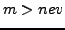 vectors,
, and a set of 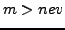 vectors,
 , that keep track of the required 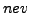 Ritz vectors and the most recent
Lanczos vectors.
Initially,
, that keep track of the required 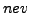 Ritz vectors and the most recent
Lanczos vectors.
Initially,  is composed of the first
is composed of the first  Lanczos vectors with the usual
tridiagonal projection matrix
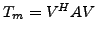 (this also can be computed
from the scalar iterates of CG).
At this point, we apply the Rayleigh-Ritz on 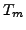 and restart
Lanczos vectors with the usual
tridiagonal projection matrix
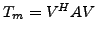 (this also can be computed
from the scalar iterates of CG).
At this point, we apply the Rayleigh-Ritz on 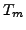 and restart  with the
current Ritz vectors 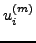.
The critical feature of our algorithm is that we also include in
with the
current Ritz vectors 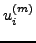.
The critical feature of our algorithm is that we also include in  the Ritz vectors from step 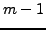.
Thus, the restarted
the Ritz vectors from step 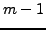.
Thus, the restarted  is computed as an orthonormal set of vectors spanning:
is computed as an orthonormal set of vectors spanning:
The use of Rayleigh Ritz and thick restart guarantee monotonic
convergence of the Ritz values in  ,
but not necessarily to any eigenvalues.
To our surprise, in all of our experiments with 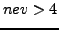, the updated
vectors converge to the required eigenpairs at a rate identical to that of
unrestarted Lanczos!
Note that any information that is discarded from
,
but not necessarily to any eigenvalues.
To our surprise, in all of our experiments with 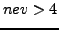, the updated
vectors converge to the required eigenpairs at a rate identical to that of
unrestarted Lanczos!
Note that any information that is discarded from  when we restart cannot
be reintroduced in
when we restart cannot
be reintroduced in  because future Lanczos vectors are
orthogonal to it.
By restarting through eq. (
because future Lanczos vectors are
orthogonal to it.
By restarting through eq. ( ) almost all Lanczos
information regarding the eigenpairs is kept in condensed form in
) almost all Lanczos
information regarding the eigenpairs is kept in condensed form in  .
In fact, with thick restarting alone (i.e., without the
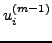
directions as performed in RMINRES) the algorithm stagnates.
We present experiments that demonstrate this behavior.
.
In fact, with thick restarting alone (i.e., without the
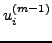
directions as performed in RMINRES) the algorithm stagnates.
We present experiments that demonstrate this behavior.
We have used eigCG to solve large QCD problems where
the number of right hand sides is in the order of hundreds.
We apply eigCG with
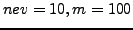 for the first 12 systems, incrementally
building more than 40 eigenvectors of  computed to machine precision.
When these eigenvectors are deflated from subsequent systems
through simple init-CG, factors of 8 speedup are obtained in the
number of iterations.
More importantly for QCD, these speedups increase as the quark mass of
the system approaches a critical mass which gives rise to the so-called
critical slow-down in these problems.
Our method completely removes this type of slowdown for any type of matrix
size.
computed to machine precision.
When these eigenvectors are deflated from subsequent systems
through simple init-CG, factors of 8 speedup are obtained in the
number of iterations.
More importantly for QCD, these speedups increase as the quark mass of
the system approaches a critical mass which gives rise to the so-called
critical slow-down in these problems.
Our method completely removes this type of slowdown for any type of matrix
size.